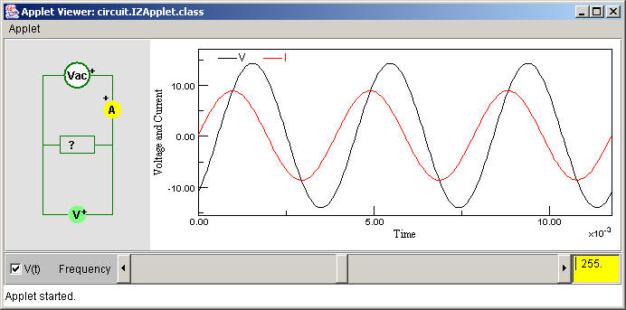

IZApplet shows ...
<applet
codebase="../classes"
code="circuit.IZApplet.class"
archive="Circuit4_.jar,STools4.jar"
name="IZApplet"
width="400"
height="300">
<param name="Resources" value="default.rc" />
<param name="dt" value="0.0001" />
<param name="FPS" value="10" />
<param name="Current" value="200.0*v/sqrt(4.0e4+f*f)" />
<param name="Phase" value="atan2(f,200)" />
<param name="Fmin" value="10" />
<param name="Fmax" value="500" />
<param name="ShowControls" value="true" />
<param name="ShowCheckBox" value="true" />
<param name="ImpedanceGraphType" value="false" />
<param name="ShowGraph" value="true" />
<param name="PixPerCell" value="80" />
<param name="DefaultCircuit" value="true" />
</applet>